Peyote
Plan alternating bead layouts with the same fast editing controls.
Use the standard canvas, palette generation, and export flow for peyote bracelet work without switching to a separate app.
Beadly now supports multiple beading pattern styles and a dedicated guided stitching mode, so the same app can take you from layout planning to bead-by-bead execution on iPhone, iPad, and Mac.
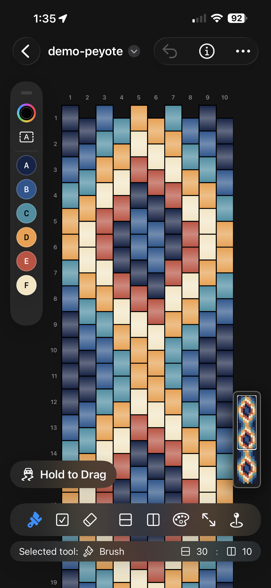

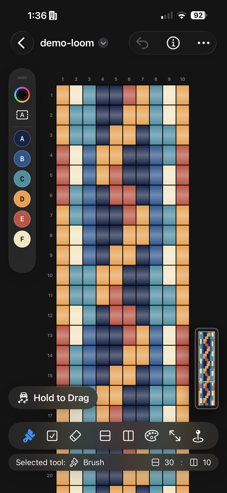
Pattern Support
Beadly supports peyote, brick, and loom workflows with shared editing tools, palette controls, and printable export, so you can move between stitch styles without changing apps.
Peyote
Use the standard canvas, palette generation, and export flow for peyote bracelet work without switching to a separate app.
Brick
Keep colors, counts, and revisions inside the same document workflow while adjusting the pattern style for brick projects.
Loom
Design larger compositions, review bead counts, and prepare exports without leaving the Beadly workspace.
New Guided Stitching Mode
Guided stitching mode takes the design off the canvas and into the making process. Follow the next section, keep your place in the pattern, and mark progress without leaving the same project file.
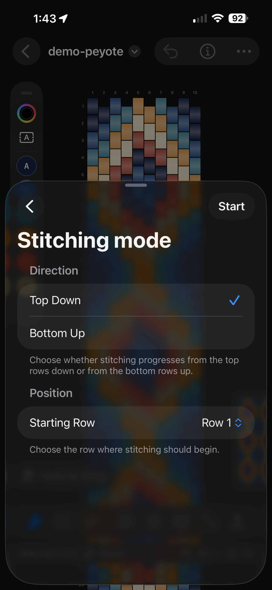
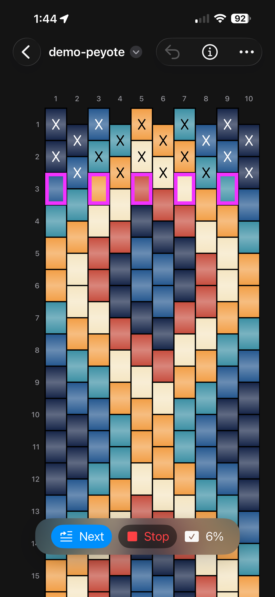
Core Workflow
Beadly still covers the full production loop: draw the map, manage color choices, review counts, and export printable references, all inside a workflow that now spans multiple pattern types and guided stitching.
Editing tools
Use bead-by-bead editing with undo, row and column updates, zoom, and document-based saving across supported pattern types.
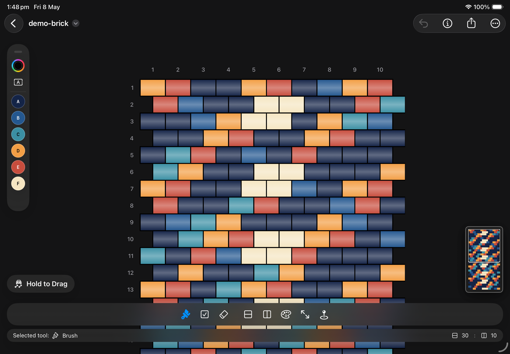
Color workflow
Build a palette from painted beads, reselect colors quickly, and review totals before stitching or exporting the final sheet.
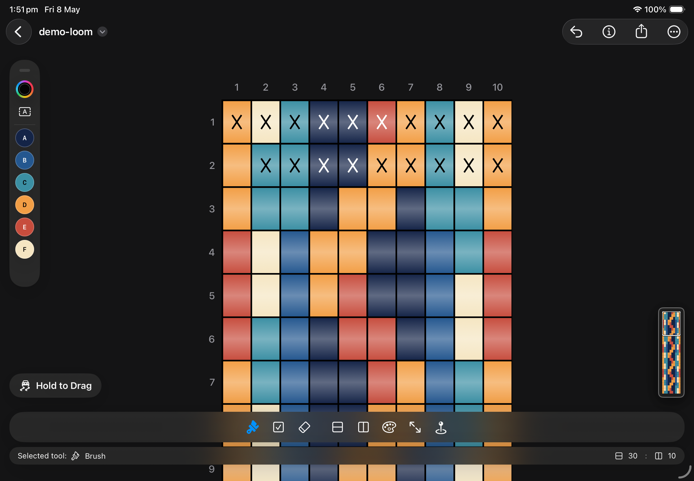
Desktop planning
When a project grows, the desktop workspace gives more room for large compositions, navigation, and final export checks.
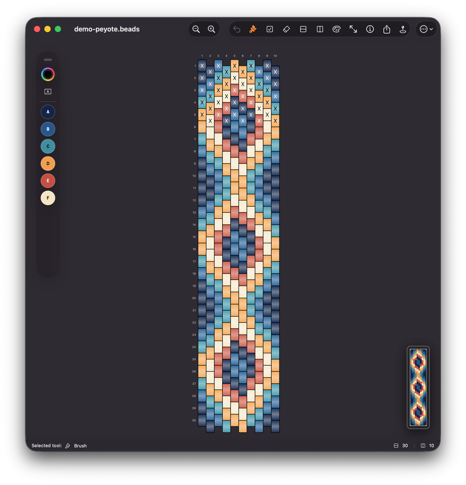
How It Works
The workflow moves from pattern setup to guided completion, so Beadly works as both a design tool and a stitching companion.
Start a new design in peyote, brick, or loom mode depending on the project you want to build.
Paint beads, adjust the layout, and refine the structure while keeping the project inside a single editable file.
Confirm colors, totals, and map details before you export or begin the physical stitching process.
Switch into the dedicated guided view when you are ready to follow the pattern in sequence.
Need More Detail?
Open the detailed manual for step-by-step instructions covering editing tools, palette controls, guided stitching, exports, files, and restore purchases.
Open detailed helpScreenshots
See how the app scales from compact phone editing to wider tablet and desktop planning.
iPhone

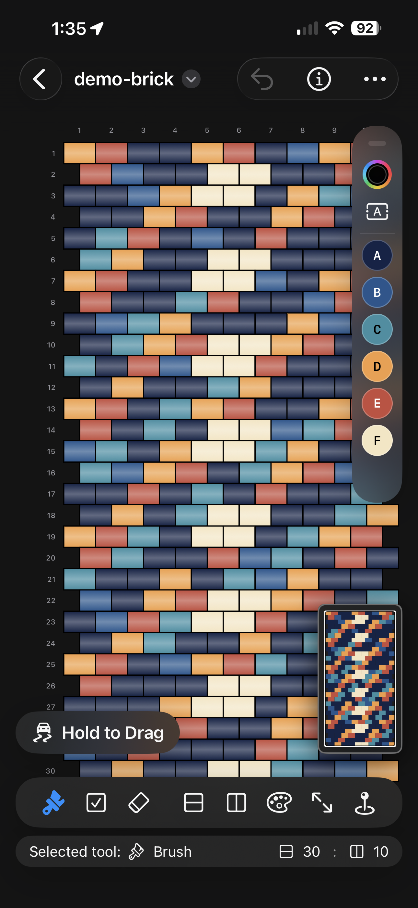

iPad
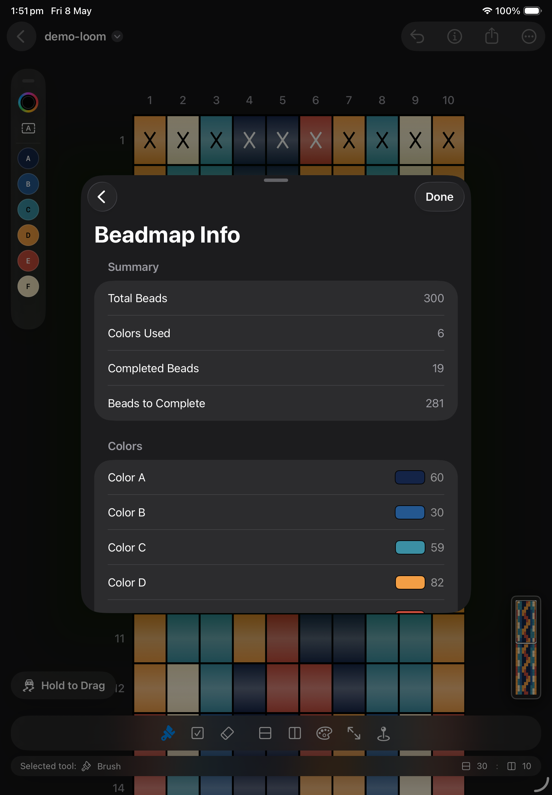
macOS
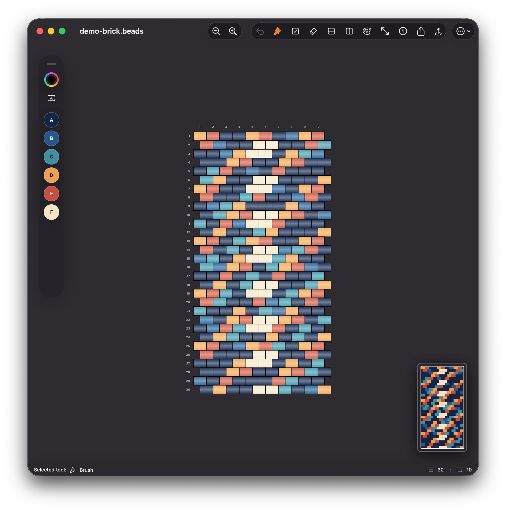
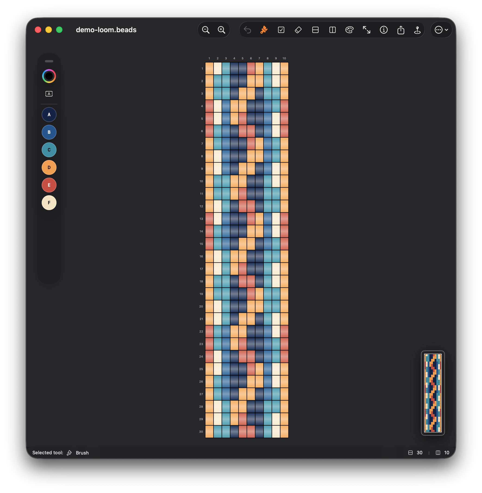
Start Designing
Begin with the free trial and upgrade whenever you are ready. Beadly brings multiple beading styles and dedicated guided stitching together in a single app built for making real projects.